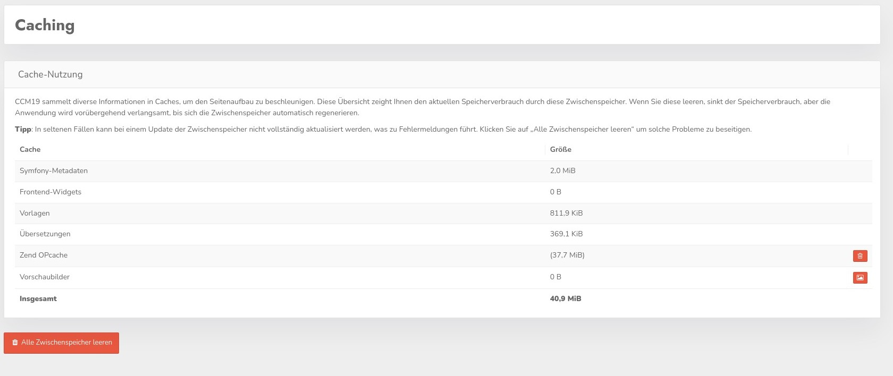

CCM19 nutzt intensives Caching aller Komponenten um die notwendigen Daten so schnell wie möglich zur Verfügung stellen zu können. Zeit ist Geld und wenn Seitenaufrufe zu lange dauern springen Besucher ab.

Auf dem Screenshot erkennen Sie die verschiedenen Caches von CCM19 und wie stark der jeweilige Cache belegt ist.
Nicht in Fullservice enthalten
Diese Funktion steht in der Fullservice Variante einzelnen Kunden nicht zur Verfügung da sie von CCM19 global über alle Accounts hinweg genutzt wird. Diese Funktion wird ebenfalls serverseitig regelmäßig durchgeführt.
Sie können mit Klick auf den roten Button "Alles Zwischenspeicher löschen" den Cache der Installation löschen. Dabei werden nur die temporären Dateien gelöscht, eine Auswirkung auf die Funktion gibt es nicht. Der Cache wird beim nächsten Seitenaufruf wieder komplett neu erstellt.
Sie können auch die Caches Zend OPCache und die Vorschaubilder einzeln löschen falls es da besondere Probleme gibt.
Falls Sie ein ungewöhnliches Problem in Ihrer CCM19 Installation merken, löschen Sie im ersten Schritt einmal den Cache und testen ob es sich damit schon behoben hat. Dies passiert häufig.